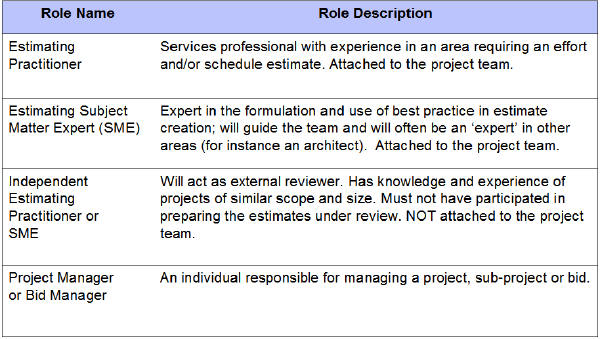

| Guideline: Estimating for Team Solution Design |
 |
|
| Related Elements |
|---|
In a pre-sale context, IBM may propose design and implementation services and in that case will be expected to provide estimates of time and costs. When estimating is required and is non-trivial, it is important to involve experts who are well qualified to provide such estimates. The following illustration offers insight as to the various roles that may be helpful or necessary in the estimating process.  Note that there are two different SME estimating roles, one for development of estimates and one for independent review. When the required estimation is non-trivial, it is important to follow good practices. The following are 10 best practices that have been identified by the Global IBM Estimating Community:
Additional information on estimating can be found at the web site below.
The following is an introduction to the estimating web site:
https://w3.webahead.ibm.com/w3ki/display/estimating/Estimating+Home https://w3.webahead.ibm.com/w3ki/download/attachments/976333/SOA+DDI+R3+Package+20080118.zip
|
| Content Lead | tlseeve@us.ibm.com |
|---|---|
| Change Date | Tue May 03 00:06:22 IST 2011 |
| Revisions | November 2008 - baseline version |
© Copyright IBM Corp. 1987, 2016 All Rights Reserved |